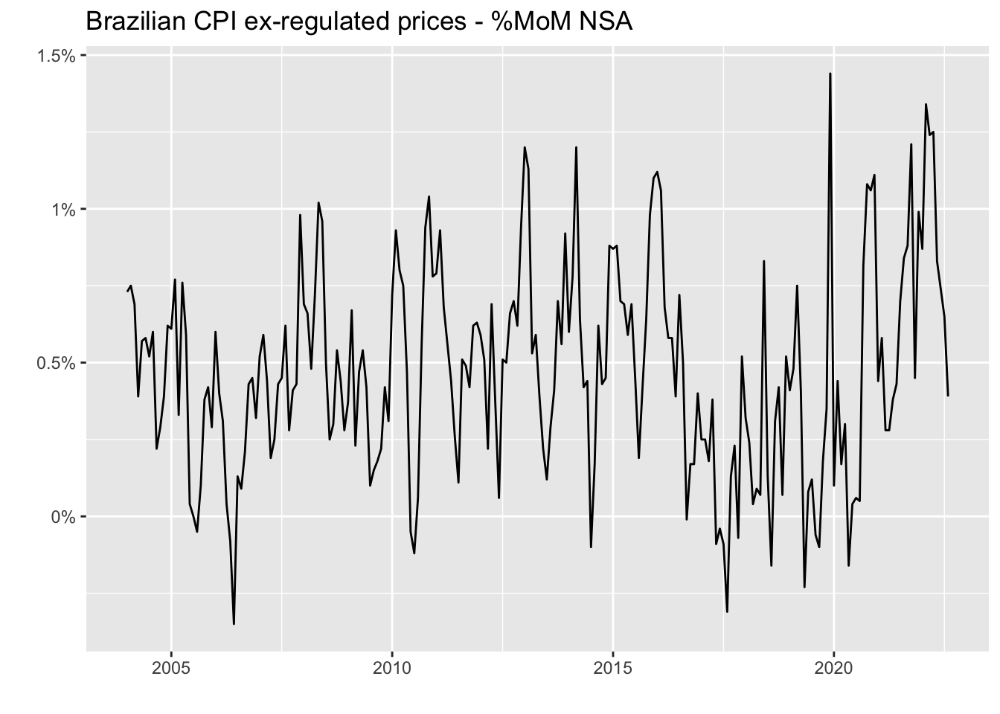
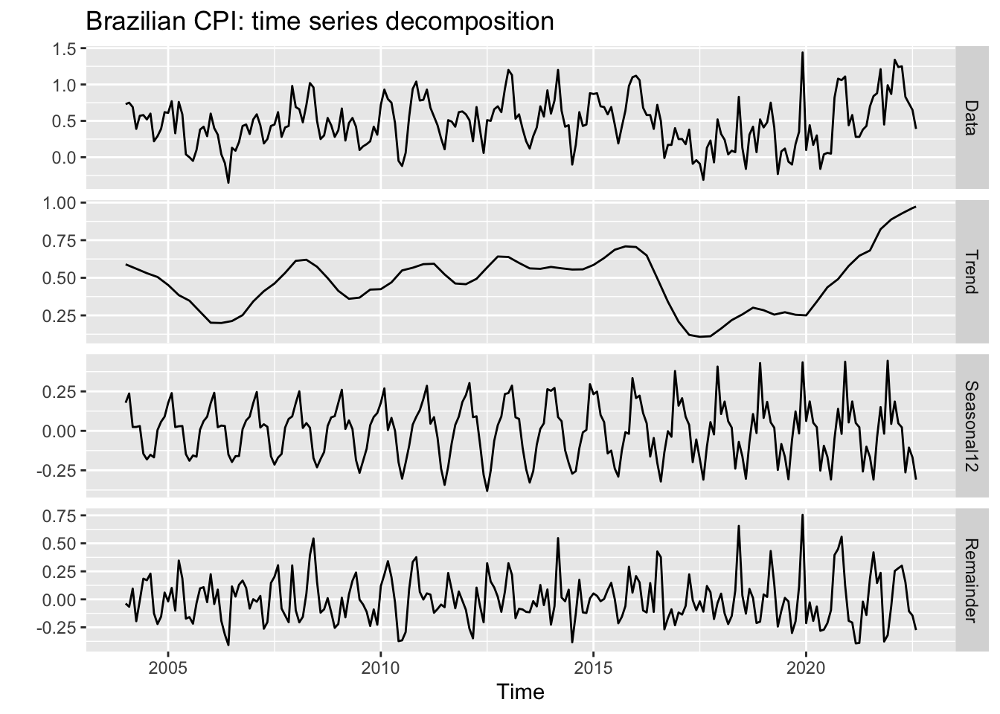
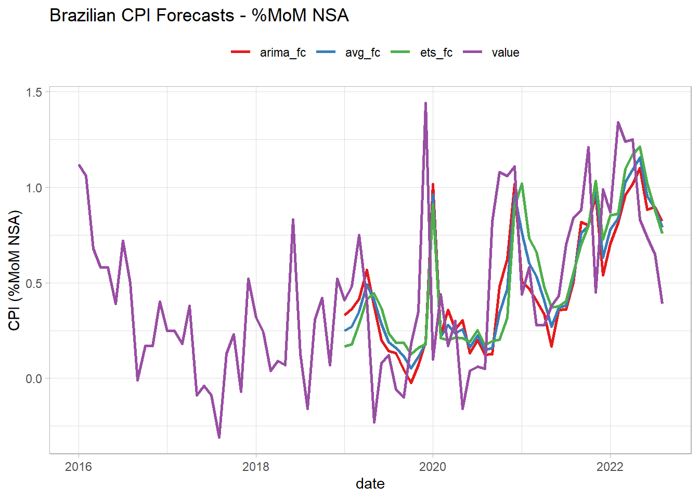
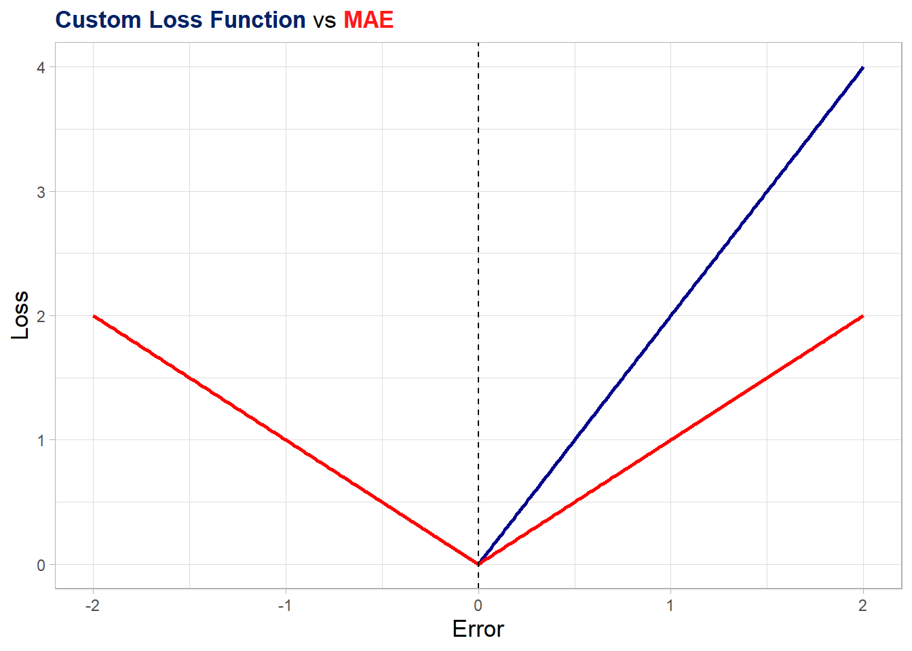

library(forecast)
library(tidyverse)
cpi_br <-
rbcb::get_series(
code = list("cpi" = 11428),
start_date = "2004-01-01",
end_date = "2022-08-01",
as = "ts")7 The abc
Essential tools for modern economic analysis
In recent years, forecasting has been widely associated with sophisticated Machine (or Deep) Learning methods such as XGBoost, LSTM, Random Forest and Neural Networks. In fact, these algorithms have proven to be very effective in improving forecast accuracy in various contexts. However, in most day-to-day applications simpler statistical methods deliver a fairly good result at a very low cost of implementation. Also, they can serve as a good benchmark for more complex models.
In this Chapter we’ll cover the basic steps to generate forecasts of a time series, making extensive use of the resources from the forecast package to predict the Brazilian CPI ex-regulated prices. I’d like to draw your attention to the fact that the choice of the appropriate method, though very relevant, is only part of the process. Therefore, in order to be successful we’ll need to understand and treat every single step very carefully.
For those interested in a more rigorous and detailed approach to this subject, I couldn’t recommend enough the exceptional Hyndman and Athanasopoulos (2018).
7.1 Step 1: Observe the time series features
Forecasting is all about extrapolating patterns. When our forecast depends on other variables, we’re assuming that the historical relationship between the target and the explanatory variables holds into the future. Likewise, when we’re employing univariate methods the main assumption is that the time series features remain constant or evolve in an understandable way. Hence, the first step is to investigate the features of the time series.
Let’s import the monthly CPI ex-regulated prices (Not Seasonally Adjusted) from the Brazilian Central Bank API using the rbcb package. Then, we’ll plot the series with the autoplot function from the forecast package. Note that it’s based on ggplot so we can add ggplot resources to the plot.
autoplot(cpi_br) +
labs(
title = 'Brazilian CPI ex-regulated prices - %MoM NSA',
y = '',
x = ''
) +
scale_y_continuous(labels = function(x) paste0(x, '%'))
Figure 7.1 gives a general picture of the time series. We can visually infer that the average CPI was around 0.5% from 2004 to 2016, then dropped to half that from mid-2016 to early 2020 before the Covid-19 pandemic hit the economy. This episode started a trend where inflation increased to values close to 1%.
A more useful plot can be obtained using the mstl function, which decomposes the series into trend, seasonal and remainder (noise) terms. These are precisely the features we’re most interested in understanding in order to make accurate predictions.
mstl(cpi_br) %>%
autoplot() +
labs(title = 'Brazilian CPI: time series decomposition')
We can extract two important pieces of information from Figure 7.2. The first one is that the trend started in the aftermath of the Covid-19 pandemic is flattening, although with no clear sign of a reversion; and the second one is a noticeable change in the seasonal pattern as of 2016, with higher peaks and a different shape. So when selecting an appropriate forecasting model we should opt for those with a flexible approach to both trend and seasonality, in the case of univariate models, or choose explanatory variables which reproduce this pattern at some extent.
7.2 Step 2: Split the sample
We need to split the sample into training and testing sets in order to perform the evaluation of our model. There are several splitting schemes and the choice depends on the nature of the data and the sample size. For time series, the most robust scheme is block cross-validation, where many contiguous sections of the time series are selected at random to train the model and tests are performed on the adjacent observations. In practice, however, it’s very common to use the leave-one-out approach, where we train the model using observations up to \(t-1\) to predict the target at \(t\). This procedure is iterated over \(t\) in order to provide a representative set of (pseudo) out-of-sample forecasts that we can use to assess the model accuracy.
Note that the structural changes we saw in Figure 7.2 have important implications on the choice of the split scheme. More specifically, the new seasonal pattern comprises about 40% of the sample, whereas the post-Covid trend is present in only 15%. Thus, testing our model over the whole sample – or a sample which overrepresents this period – could make us believe that we have a good model to predict the future when in fact we don’t.
Let’s make a simple though very common choice here: take the sample as of 2016 and use the leave-one-out approach starting at Jan/2019 to predict the twelve months ahead. We’ll use the rsample package which is part of the tidymodels ecosystem of R packages specially designed to handle forecasting in a tidy way. Since it’s under the tidy philosophy, we need to first convert our data from ts to data frame or tibble. It can be easily achieved using the timetk package.
The rolling_origin function from rsample provides a convenient object where in each slice we have two components, the train set and the test set, which can be accessed by specific functions. The initial argument defines the size of the initial sample used for training the model; the assess argument defines the number of observations used for assessment in each step; and cumulative = TRUE means we’ll not drop the first value of the sample as we incorporate a new value so as to keep the sample size constant. Rather, we’ll have an expanding-window sample.
library(rsample)
library(timetk)
cpi_df <-
tk_tbl(cpi_br, rename_index = 'date') %>%
filter(date >= 'jan 2016')
cpi_split <-
rolling_origin(
cpi_df,
initial = which(cpi_df$date == 'dec 2018'),
assess = 1,
cumulative = TRUE
)
cpi_split# Rolling origin forecast resampling
# A tibble: 44 x 2
splits id
<list> <chr>
1 <split [36/1]> Slice01
2 <split [37/1]> Slice02
3 <split [38/1]> Slice03
4 <split [39/1]> Slice04
5 <split [40/1]> Slice05
6 <split [41/1]> Slice06
7 <split [42/1]> Slice07
8 <split [43/1]> Slice08
9 <split [44/1]> Slice09
10 <split [45/1]> Slice10
# ... with 34 more rowsAs you can see, the cpi_split contains 43 slices – each slice is represented by a two-dimensional sample with [train set/test set]. The first slice contains a training set ranging from Jan/2016 to Dec/2018 (36 observations) and a test set with a single observation on Jan/2019. The second slice incorporates the observation on Jan/2019 to the training set (37 observations now) and leaves Feb/2019 as the test set. The same logic applies to the other slices until the end of the sample. With our split scheme done, we’re ready to go the next step.
7.3 Step 3: Choose the model
Choosing an appropriate model involves several dimensions. First, we should decide whether or not to use explanatory variables – and if so, which variables to use. In addition, we should weigh the pros and cons of employing a machine learning model instead of a simpler method. Considerations on both time and interpretability play a significant role in many fields. Since the purpose here is to develop intuition about each step of the forecasting pipeline, I’ll avoid these issues by assuming we’re restricted to using univariate statistical models only. This is by no means a very strong assumption since in real-life we are often required to provide reasonable forecasts quickly rather than spending a great amount of time searching for the most accurate numbers.
The forecast package contains a large set of very useful univariate statistical models. The ETS is generally my choice when I have no obvious candidate, because it doesn’t impose any strong assumption about the data (eg. stationarity). In addition, it has proven to perform very well on a variety of data sets at the M Competition. I use TBATS as a first approach whenever I have to predict high frequency data (daily or higher) since it can handle multiple seasonal patterns. ARIMA is useful for stationary data, specially when ACF/PACF plots show a well-defined autocorrelation structure. However, it’s worth noting that in practice statistical assumptions are often overlooked when the purpose of the model is forecasting rather than making inference.
As a matter of fact, producing accurate forecasts is inevitably a trial and error process and, as we become experienced with the subject, some choices look more promising. For instance, we saw that the Brazilian CPI exhibit a changing trend – favoring a more flexible model like ETS. On the other hand, for most of the period this trend seems to evolve at a constant pace, which makes ARIMA models good candidates as well. In addition, in the presence of a seasonal pattern models which are more successful in capturing the seasonality of the data have a clear advantage. It’s not unusual for one model to be better at capturing a specific feature of the data while another model does the same for other feature – that’s why combining the forecasts from different models usually improve accuracy.1 Therefore, in order to have a more reliable result we’ll produce forecasts from three sources: ETS, ARIMA and the average between them.
cpi_fc <- cpi_split %>%
mutate(
ets_fc = map_dbl(
.x = splits,
.f = ~ (.x %>%
analysis() %>%
tk_ts(select = 'value', start = c(2016,1), frequency = 12) %>%
ets() %>%
forecast(h = 1)
)$mean
),
arima_fc = map_dbl(
.x = splits,
.f = ~ (.x %>%
analysis() %>%
tk_ts(select = 'value', start = c(2016,1), frequency = 12) %>%
auto.arima() %>%
forecast(h = 1)
)$mean
),
avg_fc = (arima_fc+ets_fc)/2,
date = map_chr(
.x = splits,
.f = ~ (.x %>%
assessment()
)$date %>%
as.character()
) %>%
zoo::as.yearmon()
) %>%
select(date, contains('fc')) %>%
right_join(cpi_df, by = 'date')
cpi_fc# A tibble: 80 x 5
date ets_fc arima_fc avg_fc value
<yearmon> <dbl> <dbl> <dbl> <dbl>
1 Jan 2019 0.166 0.330 0.248 0.41
2 Feb 2019 0.179 0.364 0.271 0.48
3 Mar 2019 0.285 0.414 0.349 0.75
4 Apr 2019 0.416 0.567 0.492 0.41
5 May 2019 0.444 0.377 0.411 -0.23
6 Jun 2019 0.368 0.200 0.284 0.08
7 Jul 2019 0.236 0.142 0.189 0.12
8 Aug 2019 0.187 0.132 0.160 -0.06
9 Sep 2019 0.187 0.0449 0.116 -0.1
10 Oct 2019 0.126 -0.0230 0.0516 0.18
# ... with 70 more rowsNow we have a data frame with the predictions from each source plus the actual (realized) value for the CPI for the last 45 months – including periods pre-, during- and post-Covid. In the next section, we’ll see how to get a representative summary of the results so as we can conclude which model is better. You may have a clue on how to do this, but I can assure you that there are some relevant aspects worth exploring that are hardly found elsewhere. Before moving to the next section, we can take a look on how these forecasts look like.
Show the code
cpi_fc %>%
pivot_longer(-date, names_to = 'model', values_to = 'forecast') %>%
ggplot(aes(x = date)) +
geom_line(aes(y = forecast, color = model), lwd = 1) +
theme_light() +
scale_color_brewer(type = 'qual', palette = 6) +
theme(legend.position = 'top') +
labs(title = 'Brazilian CPI Forecasts - %MoM NSA',
y = 'CPI (%MoM NSA)',
color = '')Warning: Removed 108 row(s) containing missing values (geom_path).
7.4 Step 4: Evaluate the model
Choosing the best forecasting model can be stated in mathematical terms as a problem of minimizing an error metric – the mean absolute error (MAE) or the root mean square error (RMSE) being common choices. These metrics are loss functions, i.e, they express an objective. Consequently, we should be fully aware of what our objective is in order to translate it into an appropriate metric (or function).
For example, MAE and RMSE are symmetric functions and use simple average to summarize the forecasting errors. Using both of them to evaluate model’s accuracy is equivalent to say: “I don’t care about the sign of the error – 2 units up or down equally impact my result; Also, it doesn’t matter when the largest errors occurred – over the last 3 observations or in the early part of the evaluation period”.
Surely, these conditions don’t apply to all businesses. Someone interested in forecasting the demand for electricity in a large city might prefer to be surprised down than up. Also, a model with higher accuracy in the last 12 months might be better at capturing the current electricity demand pattern than a model with a great performance on the initial periods of the testing sample. In short, many situations require us to define what conditions the model must meet and this involves designing a specific function. This function should summarize the forecast errors in order to represent our objective.
To demonstrate this idea, I will propose two alternative accuracy metrics that are slight modifications of the well-known MAE. The first (accuracy_1) assigns double the weight to upside errors (predictions below actual values), whereas the second (accuracy_2) assigns (linearly) decreasing weights as further in the past the errors are. You should be aware that the results from the two metrics are not directly comparable, the ordering of models being the relevant information here.
accuracy_1 <- function(e){
.abs_weighted_errors <- ifelse(e > 0, 2*e, abs(e))
.mean_abs_weighted_errors <- mean(.abs_weighted_errors)
return(.mean_abs_weighted_errors)
}
accuracy_2 <- function(e){
.abs_errors <- abs(e)
.weights <- seq(from = 1, to = length(.abs_errors), by = 1)
.weights <- .weights/sum(.weights)
.mean_abs_weighted_errors <- weighted.mean(.abs_errors, .weights)
return(.mean_abs_weighted_errors)
}Below I plot the accuracy_1 function along with the original MAE function as a more effective way to give you a sense of what’s happening behind the scenes. Basically, for negative errors (realized value below the prediction) the weigh are the same as in the original MAE, while it’s somewhat higher for positive errors (realized value above the prediction).
Show the code
library(ggtext)
acc_demo <- tibble(
x = seq(from = -2, to = 2, by = 0.01)
) %>%
mutate(
t = 1:n(),
Loss_1 = ifelse(x > 0, 2*x, abs(x)),
mae = abs(x)
)
acc_demo %>%
ggplot(aes(x = x)) +
geom_line(aes(y = Loss_1), color = "darkblue", lwd = 1) +
geom_line(aes(y = mae), color = "red", lwd = 1) +
geom_vline(xintercept = 0, linetype = "dashed") +
theme_light() +
theme(plot.title = element_markdown(lineheight = 1.1),
axis.title = element_text(size = 13),
legend.position = "none") +
labs(title = "<span style='color:#002266;'><b>Custom Loss Function</b></span> vs <span style='color:#ff1a1a;'><b>MAE</b></span>",
x = "Error", y = "Loss")
Now we’re ready to apply our two custom functions plus the MAE to the errors we computed from the three models in order to decide which one is the most accurate. Again, these metrics aren’t comparable to each other. Instead, we’re interested in the ordering within the same metric. In addition, there’s no such a thing as the best metric. As we saw earlier in this section, the appropriate metric is the one that reflects as closely as possible our objective. Besides, we find several desirable characteristics in conventional metrics such as MAE or RMSE and I don’t mean to rule them out. The main message here is that we must be fully aware of what our objective is and how to translate it into an appropriate function. In this regard, the knowledge of functional forms is essential.
cpi_errors <- cpi_fc %>%
filter(date >= 'Jan 2019') %>%
mutate(across(contains('fc'), ~ value - .x, .names = 'error_{.col}')) %>%
summarise(
across(contains('error'),
list(
'acc1' = ~ accuracy_1(.x),
'acc2' = ~ accuracy_2(.x),
'mae' = ~ mean(abs(.x))
),
.names = '{.col}-{.fn}')) %>%
pivot_longer(everything(), names_to = 'model_metric', values_to = 'value') %>%
separate('model_metric', c('model', 'metric'), '-') %>%
pivot_wider(names_from = 'metric', values_from = 'value') %>%
mutate(model = str_remove_all(model, 'error_|_fc'))
cpi_errors# A tibble: 3 x 4
model acc1 acc2 mae
<chr> <dbl> <dbl> <dbl>
1 ets 0.488 0.304 0.317
2 arima 0.456 0.286 0.284
3 avg 0.468 0.292 0.298The results show that the ARIMA model is the most accurate by the three metrics, outperforming even the average model. At this point, I’d like to conclude with two considerations. The first is that combining models usually improves performance, but not always as the above exercise made clear. Nevertheless, although the literature shows that using either the mean or median of the models is very difficult be beaten, it’s possible to improve accuracy by optimizing the weights assigned to each model. Finally, we compared the models by means of their point forecasts. Despite being very common, this does not take into account the fact that each point forecast is one single realization of a random process and there is a vast literature that suggests the use of density forecasts and distributional accuracy measures.
Also, it’s possible to fit the model for each time period – an approach called direct forecast – or even to use different models for different time periods. However, we’ll not explore these topics here.↩︎